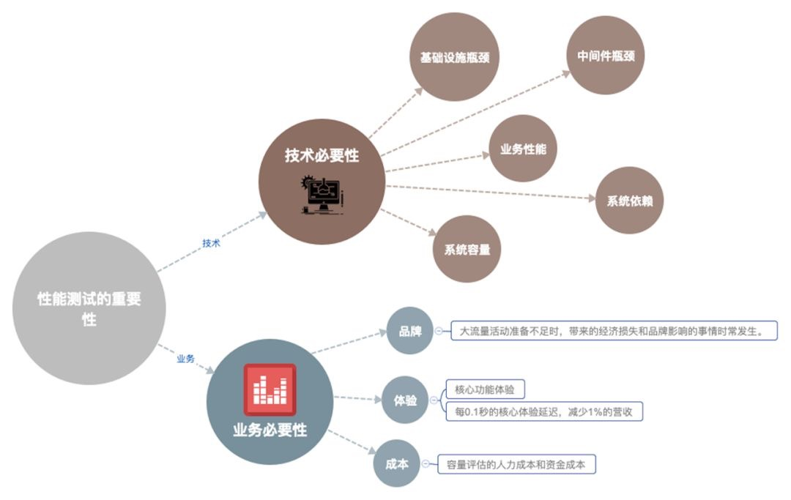
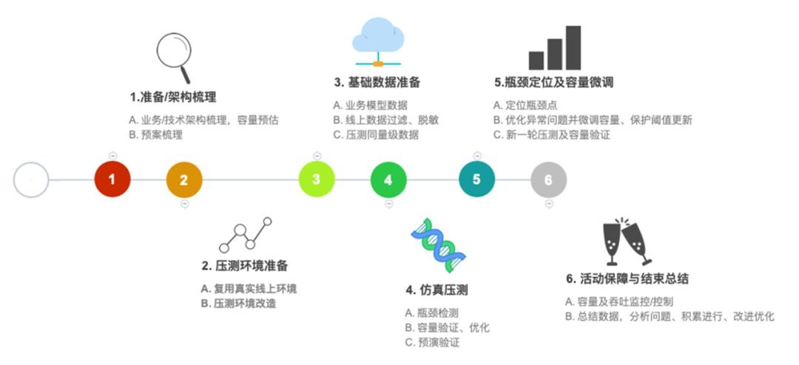
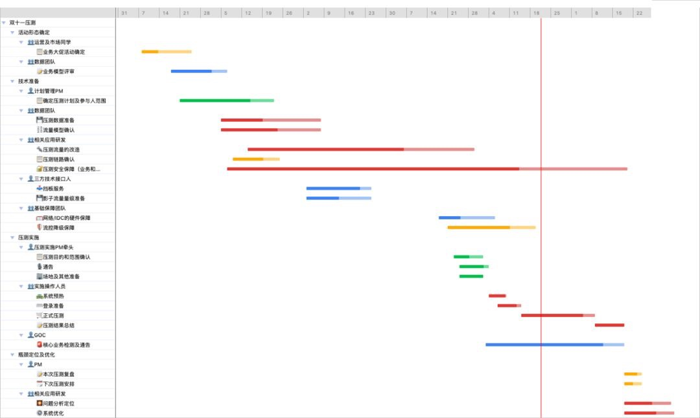
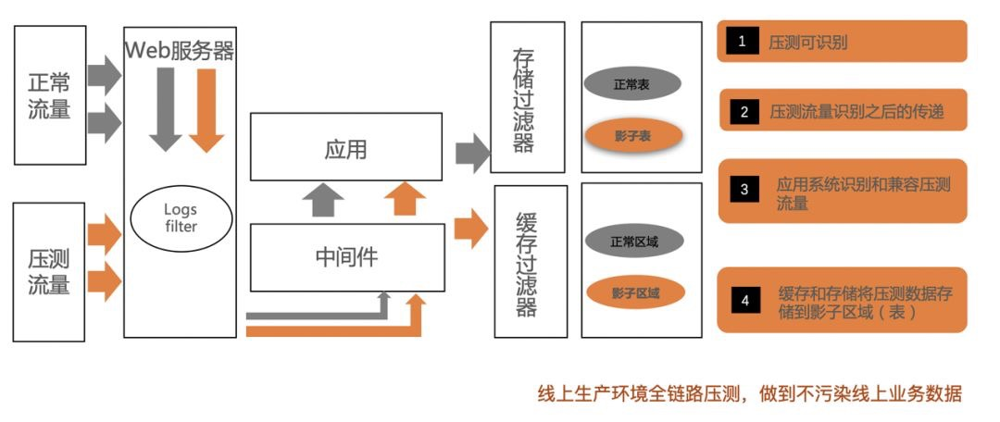
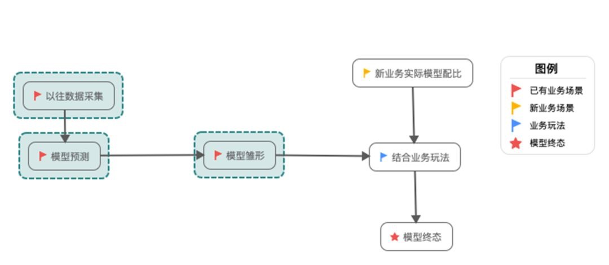
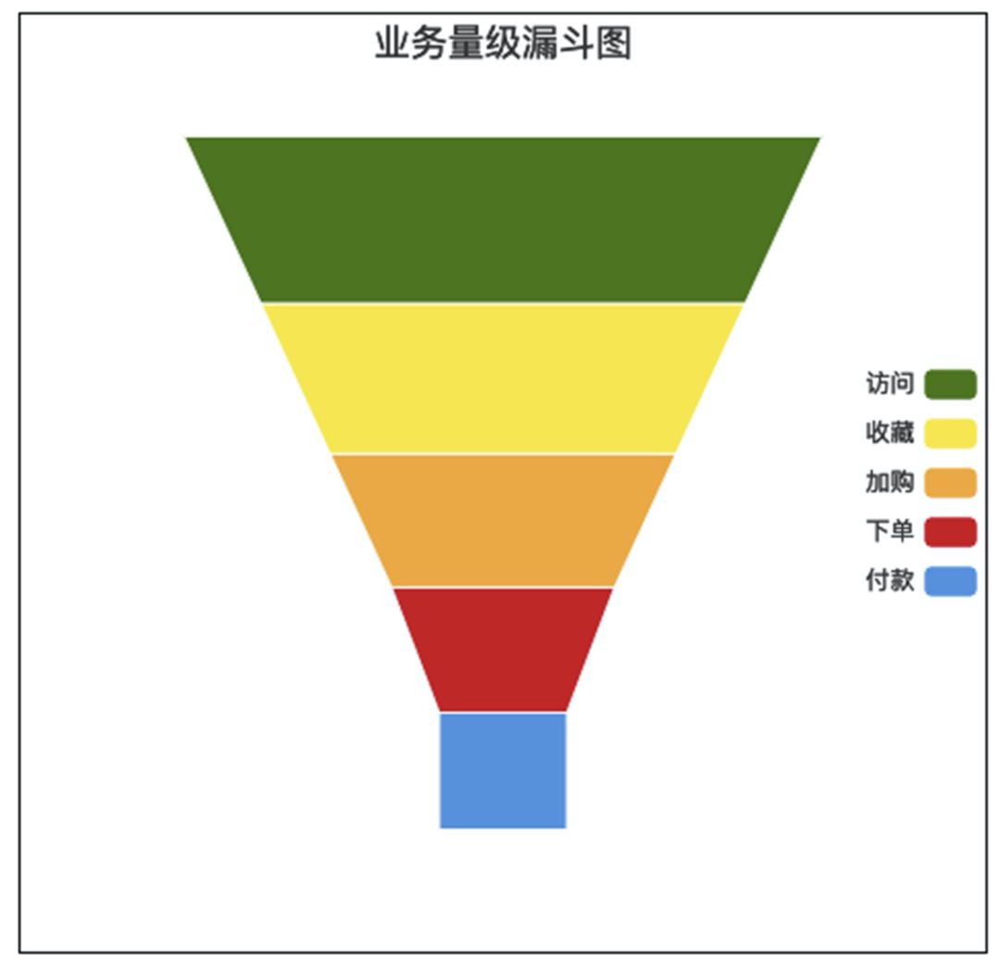

<!DOCTYPE html>
<html>
<head><meta name="generator" content="Hexo 3.9.0">
  <meta charset="utf-8">
  
  <title>阿里如何做全链路压测 | 守株阁</title>
  <meta name="viewport" content="width=device-width, initial-scale=1, maximum-scale=1">
  <meta name="description" content="性能测试的必要性 营销活动周期首先引入一个营销活动周期的概念，它是一个闭环流程： PS：1和2之间再加一个步骤。环境改造和基础数据准备。强调必须在生产环境。  压测环境准备：需要复用真实的线上环境，压测结果和问题暴露才都是最真实情况。可通过压测流量全局识别、透传（数据进入影子区域）。 基础数据准备：以电商场景为例，构造满足大促场景的核心基础相关数据（如买家、卖家、商品信息），以线上数据为数据源，进">
<meta name="keywords" content="性能测试,阿里">
<meta property="og:type" content="article">
<meta property="og:title" content="阿里如何做全链路压测">
<meta property="og:url" content="http://yoursite.com/2019/11/10/阿里如何做全链路压测/index.html">
<meta property="og:site_name" content="守株阁">
<meta property="og:description" content="性能测试的必要性 营销活动周期首先引入一个营销活动周期的概念，它是一个闭环流程： PS：1和2之间再加一个步骤。环境改造和基础数据准备。强调必须在生产环境。  压测环境准备：需要复用真实的线上环境，压测结果和问题暴露才都是最真实情况。可通过压测流量全局识别、透传（数据进入影子区域）。 基础数据准备：以电商场景为例，构造满足大促场景的核心基础相关数据（如买家、卖家、商品信息），以线上数据为数据源，进">
<meta property="og:locale" content="zh-Hans">
<meta property="og:image" content="http://yoursite.com/2019/11/10/阿里如何做全链路压测/性能测试的必要性.png">
<meta property="og:image" content="http://yoursite.com/2019/11/10/阿里如何做全链路压测/营销活动周期闭环.png">
<meta property="og:image" content="http://yoursite.com/2019/11/10/阿里如何做全链路压测/压测活动甘特图.png">
<meta property="og:image" content="http://yoursite.com/2019/11/10/阿里如何做全链路压测/压测的中间件改造.png">
<meta property="og:image" content="http://yoursite.com/2019/11/10/阿里如何做全链路压测/形成最终的业务模型的流程.png">
<meta property="og:image" content="http://yoursite.com/2019/11/10/阿里如何做全链路压测/业务量级漏斗图.png">
<meta property="og:updated_time" content="2019-11-10T10:27:42.809Z">
<meta name="twitter:card" content="summary">
<meta name="twitter:title" content="阿里如何做全链路压测">
<meta name="twitter:description" content="性能测试的必要性 营销活动周期首先引入一个营销活动周期的概念，它是一个闭环流程： PS：1和2之间再加一个步骤。环境改造和基础数据准备。强调必须在生产环境。  压测环境准备：需要复用真实的线上环境，压测结果和问题暴露才都是最真实情况。可通过压测流量全局识别、透传（数据进入影子区域）。 基础数据准备：以电商场景为例，构造满足大促场景的核心基础相关数据（如买家、卖家、商品信息），以线上数据为数据源，进">
<meta name="twitter:image" content="http://yoursite.com/2019/11/10/阿里如何做全链路压测/性能测试的必要性.png">
  
    <link rel="alternate" href="/atom.xml" title="守株阁" type="application/atom+xml">
  
  
    <link rel="icon" href="/favicon.png">
  
  
  <link rel="stylesheet" href="/css/style.css">
  

<link rel="stylesheet" href="/css/prism.css" type="text/css">
<link rel="stylesheet" href="/css/prism-line-numbers.css" type="text/css"></head>
</html>
<body>
  <div id="container">
    <div id="wrap">
      <header id="header">
  <div id="banner"></div>
  <div id="header-outer" class="outer">
    
    <div id="header-inner" class="inner">
      <nav id="sub-nav">
        
          <a id="nav-rss-link" class="nav-icon" href="/atom.xml" title="RSS Feed"></a>
        
        <a id="nav-search-btn" class="nav-icon" title="搜索"></a>
      </nav>
      <div id="search-form-wrap">
        <form action="//google.com/search" method="get" accept-charset="UTF-8" class="search-form"><input type="search" name="q" class="search-form-input" placeholder="Search"><button type="submit" class="search-form-submit">&#xF002;</button><input type="hidden" name="sitesearch" value="http://yoursite.com"></form>
      </div>
      <nav id="main-nav">
        <a id="main-nav-toggle" class="nav-icon"></a>
        
          <a class="main-nav-link" href="/">首页</a>
        
          <a class="main-nav-link" href="/archives">归档</a>
        
          <a class="main-nav-link" href="/about">关于</a>
        
      </nav>
      
    </div>
    <div id="header-title" class="inner">
      <h1 id="logo-wrap">
        <a href="/" id="logo">守株阁</a>
      </h1>
      
        <h2 id="subtitle-wrap">
          <a href="/" id="subtitle">一切都是守株待兔，如切如磋，如琢如磨。I am just joking.</a>
        </h2>
      
    </div>
  </div>
</header>
      <div class="outer">
        <section id="main"><article id="post-阿里如何做全链路压测" class="article article-type-post" itemscope itemprop="blogPost">
  <div class="article-meta">
    <a href="/2019/11/10/阿里如何做全链路压测/" class="article-date">
  <time datetime="2019-11-10T08:26:09.000Z" itemprop="datePublished">2019-11-10</time>
</a>
    
  </div>
  <div class="article-inner">
    
    
      <header class="article-header">
        
  
    <h1 class="article-title" itemprop="name">
      阿里如何做全链路压测
    </h1>
  

      </header>
    
    <div class="article-entry" itemprop="articleBody">
      
        <!-- Table of Contents -->
        
        <h1 id="性能测试的必要性"><a href="#性能测试的必要性" class="headerlink" title="性能测试的必要性"></a>性能测试的必要性</h1><p></p>
<h1 id="营销活动周期"><a href="#营销活动周期" class="headerlink" title="营销活动周期"></a>营销活动周期</h1><p>首先引入一个营销活动周期的概念，它是一个闭环流程：</p>
<p>PS：1和2之间再加一个步骤。环境改造和基础数据准备。强调必须在生产环境。</p>
<ol>
<li>压测环境准备：需要复用真实的线上环境，压测结果和问题暴露才都是最真实情况。可通过压测流量全局识别、透传（数据进入影子区域）。</li>
<li>基础数据准备：以电商场景为例，构造满足大促场景的核心基础相关数据（如买家、卖家、商品信息），以线上数据为数据源，进行采样、过滤、脱敏，并保持同等量级。</li>
</ol>
<p></p>
<p><strong>阿里实际上是 2013 年才开始做全链路压测的</strong>，现在的压测周期更加智能化。可以在白天由几个人值守进行，包含以下活动：</p>
<p></p>
<h1 id="压测环境改造"><a href="#压测环境改造" class="headerlink" title="压测环境改造"></a>压测环境改造</h1><p>整个阿里经济体的压测环境，包括双十一压测，全部选择的是线上环境，此时需要评估：</p>
<ol>
<li>如果要进行全链路压测，是否直接可以使用现有环境。</li>
<li>同一个API多次压测是否会被拦截-容易被忽略。</li>
<li>是否会有脏数据影响、如果有影响应该如何改造避免-必须进行的改造项目：1 识别+ 透传流量标，2 构造影子数据区域。</li>
</ol>
<p>以上这些问题总结下来即为两类问题：<strong>业务问题和数据传递问题</strong>。问题比较明确，我们就根据这两类问题来做逐一的改造。</p>
<p>改造分为2方面：<strong>业务改造和中间件改造</strong>，这些在内部全链路压测1.0 时代就已经完成了，对于外部客户来说，可以作为一个技术改造上的参考点。同时我们已经有成熟的产品化方案提供一站式的能力，免去复杂的改造和维护成本。</p>
<h2 id="业务改造"><a href="#业务改造" class="headerlink" title="业务改造"></a>业务改造</h2><p>业务改造即为了解决压测过程中的业务异常问题，或者压测请求无法正常被执行的问题。</p>
<p>业务改造即为了解决压测过程中的业务异常问题，或者压测请求无法正常被执行的问题。举例如下：</p>
<ul>
<li>流量区分与识别：压测流量和业务流量的区分，并可在全链路系统中识别出来；</li>
<li>流量单一性问题：比如下单，同一个人执行一次下单后再重复执行就会失败；</li>
<li>流量的限流拦截：如果日常有限制，需要改造为接入流量降级能实时生效调整配置；</li>
<li>剔除压测数据对报表的影响</li>
<li>动态校验</li>
</ul>
<p>业务改造涉及的内容无法一一穷举，需要根据不同的业务模型、业务架构及配置，一一梳理。一般梳理改造之后，后续所有新应用都按照规范去开发，每年的压测前进行基础的查漏补缺即可。- <strong>面向压测设计</strong>。</p>
<h2 id="中间件改造"><a href="#中间件改造" class="headerlink" title="中间件改造"></a>中间件改造</h2><p>中间件作为衔接业务应用之间的组件，在压测中有个至关重要的功能就是将流量标识传递下去，一直到最终的数据库层面。虽然我们在13年开始，从核心应用使用到的中间件已经升级改造完成，中间我们踩过不少坑，诸如改造全面性、改造带来的业务代码修改成本、版本兼容问题等。</p>
<p></p>
<h1 id="数据准备"><a href="#数据准备" class="headerlink" title="数据准备"></a>数据准备</h1><p>大促活动确定之后，会对业务模型进行一次评审，即确定该业务模式对应的技术架构应用有哪些，需要做压测的业务范围有哪些、以及数据量级、数据形式是什么样的。所以数据准备包括准备业务模型数据和压测流量数据两部分。<br>数据的准备，主要分为两部分：业务模型的建立和基础数据的构造。</p>
<h2 id="业务模型数据"><a href="#业务模型数据" class="headerlink" title="业务模型数据"></a>业务模型数据</h2><p>业务模型数据，即压测的业务模型相关的数据，包括涉及到哪些API，这些API之间的压测量级是什么样的或者有什么样的比例关系等。业务模型的构造准确度，直接影响了压测结果的可参考性。</p>
<p>模型设计的目的主要是将业务进行采集并抽象成可执行的压测模型，并对各个子模型中的元素进行预测和设计，最终产生可以执行的压测模型。在双十一大促前，我们会确定好相关的业务，进行场景分类。</p>
<ul>
<li>已有业务场景：采集以往数据并做处理，作为预测数据，形成一个模型雏形，结合新的业务玩法，形成已有业务的模型；</li>
<li>新业务场景：直接按照新的业务，模型配比，形成一个新业务模型。</li>
</ul>
<p>最终会将两种业务场景类型进行组合，形成最终的终态业务模型。以下图作为示例：</p>
<p></p>
<p>在组装业务模型数据的时候，需要注意一些关键因素，比如修改具体的电商业务模型关键因素：</p>
<p>1对N ：上游业务一个请求对应下游业务接口是否会存在调用多次的情况；<br>业务属性的比例：根据历史数据计算不同类型业务的比例关系；</p>
<p>业务模型组装之后，单一事务中的业务模型，应该是一个漏斗状的。而每层之间的漏斗比例，是根据不同的层级、不同的玩法、不同的规则会有不一样的比例关系。在一次大促活动中，这个比例关系理论上是不会变化的。漏斗模型参考如下：</p>
<p></p>
<p>业务模型在压测时对应的就是压测量级，淘宝大促用的全部都是RPS模式压测，即从服务端角度出发每个API之间是漏斗比例关系、能够很好地应用于容量规划上。商业化产品PTS（性能测试服务，Performance Testing Service）中也很好的支持了RPS模式。</p>
<h2 id="压测基础数据"><a href="#压测基础数据" class="headerlink" title="压测基础数据"></a>压测基础数据</h2><p><strong>如果说业务模型对应的是确定要压测的接口/API的话，那压测流量数据，就是确定这些压测API到底压测的是什么内容</strong>，比如：登录哪些用户、查看哪些商品和店铺、购买哪些商品，甚至是付款价格是什么。</p>
<p>流量数据中，有一部分为上述业务模型对应具体RPS值，模型体现的是比例关系，而流量数据即有每次压测具体的RPS值。</p>
<p>流量数据中最重要的部分，即为真实的压测数据，我们可以称之为基础数据，比如交易的买家、卖家、商品数据等。全链路压测的目的是为了模拟双11，所以模拟的真实性非常重要，基础数据的真实性就是至关重要的一环。<strong>全链路压测会以线上数据作为数据源，经过采样、过滤、脱敏等操作，形成可作为压测使用的数据。</strong></p>
<p>线上数据拿出来使用的时候，<strong>特别涉及到写数据的时候，避免造成脏数据</strong>，我们落地或者读取的时候，采用影子表的形式。当识别到压测流量，则读写影子表，否则就读写线上正式表。影子表的产生为的是压测流量安全。</p>
<p>淘宝内部系统使用的压测体系，数据平台和压测平台是两套平台。<strong>数据平台管理/提供压测数据（包括模型数据和流量数据），压测平台提供施压能力</strong>，即保证压测请求能够以指定的“协议”、指定的量级速率、从全国各地发送出来。商业化产品PTS（性能测试服务，Performance Testing Service）中提供的数据工厂能力，很好的将内部的数据平台和压测平台结合起来，产出为统一的一个压测系统，<strong>只需用户构造好压测数据以文件/自定义的形式定义好参数，在使用处配置即</strong>可。</p>
<h1 id="流量安全策略"><a href="#流量安全策略" class="headerlink" title="流量安全策略"></a>流量安全策略</h1><p>流量安全策略主要是为了保证能够正常的施压流量且数据不错乱，安全地、符合预期地进行。这里面就包括了两层考虑：</p>
<ol>
<li>测试数据和正常数据的严格隔离，即非法流量的监控和保护机制；</li>
</ol>
<ul>
<li>手段：影子表数据。影子表为和线上结构一致，但是处于隔离位置的可写压测数据表。</li>
<li>效果：数据隔离，避免了数据错乱。</li>
</ul>
<ol start="2">
<li>压测流量的安全过滤，即不被识别为攻击流量；</li>
</ol>
<ul>
<li>手段：将安全相关策略接入流控降级功能；针对压测适当放松安全策略，或根据特殊标记识别；</li>
<li>效果：压测流量不被判定为攻击流量，成功压测的同时保障线上业务的安全性。</li>
</ul>
<p>此处，涉及到第三方的系统，诸如支付宝、短信等服务，因业务特殊性需要做压测系统的打通。13年淘宝实现了第一次全链路压测，但是未能打通下游业务链路。在14年双十一压测前，和支付宝、物流环节等打通了全面的压测系统。对于外部客户来说，支付宝、短信等都有对应的<strong>挡板服务（mock）</strong>（测试领域里专门有“挡板测试”的概念）可提供，用来供用户做全链路压测时使用。</p>
<h1 id="压测实施"><a href="#压测实施" class="headerlink" title="压测实施"></a>压测实施</h1><p>根据最开始介绍到的流程管控，一切准备就绪之后，即可开始进行全链路压测。除常规理解的正式压测之外，我们还有额外的两个预操作：系统预热、登录准备。</p>
<p>关于系统预热 这里说的预热，未包含我们内部提到的<strong>预跑</strong>（预跑应该是一个低流量的压测小脉冲压测）。预热是为了该缓存的数据提前缓存好，达到大促缓存态的状态，也更好地实现我们缓存的目的。大促缓存的使用应该利用到极致，故需要通过预热来进行。</p>
<p>对外部客户来说，可以通<strong>过先一轮、低量级的全链路压测，来提前预热系统</strong>，包括在真正大促活动之前也可这样操作，即提前缓存住需要缓存的数据。</p>
<h2 id="登录准备"><a href="#登录准备" class="headerlink" title="登录准备"></a>登录准备</h2><p>登录准备主要是用于需要长连接保持、秒杀等场景，即用户都是逐步登录上来，然后再进行业务操作的场景。故如果量级特别大的时候，可以提前做登录的准备，一则来模拟真实用户登录场景，二则是对登录系统的保护。</p>
<h2 id="正式压测"><a href="#正式压测" class="headerlink" title="正式压测"></a>正式压测</h2><p>一般正式压测会按照压测计划，执行多种压测策略。淘宝的双11大促压测，一般包含这样几步：</p>
<p>1）峰值脉冲：即完全模拟0点大促目标峰值流量，进行大促态压测，观察系统表现。</p>
<p>2）系统摸高：取消限流降级保护功能，抬高当前压测值（前提是当前的目标压测值已经达到，则可以进行摸高测试），观察系统的极限值是多少。可进行多轮提升压力值压测，直到系统出现异常为止。</p>
<p>3）限流降级验证：即验证限流降级保护功能是否正常。 （AHAS引入）商业化产品AHAS(应用高可用服务，Application High Availability Service）提供了全面的限流降级能力，可进行全链路的降级保护。</p>
<p>4）破坏性测试：这个主要是为了验证预案的有效性，类似于容灾演练时的预案执行演练。即为持续保持大促态压测，并验证预案的有效性，观察执行预案之后对系统的影响。</p>
<p>对外部客户来说，可以配置不同的压测量级数据，来进行多轮压测，并观察其系统表现。压测不应该是一次性的操作，而应该是反复的、多轮验证的操作。</p>
<h1 id="问题定位分析"><a href="#问题定位分析" class="headerlink" title="问题定位分析"></a>问题定位分析</h1><p>压测结束之后，会将压测过程中的系统表现、监控数据等整理，进行压测复盘，分析当前系统瓶颈、后续改进修复计划及下一轮压测时间等。在分析定位问题时，因涉及的系统较多、子业务系统的形态不一，需要具体问题具体分析，其中不免需要一线研发的介入。</p>
<p>商业化产品PTS（性能测试服务，Performance Testing Service）的压测报告，有详细统计数据及趋势图数据，采样日志以及添加了的监控数据。后续PTS还会提供架构监控，帮助性能测试执行同学，更好地从系统架构角度判定压测过程中系统是否正常，大致瓶颈点。</p>
<h1 id="总结"><a href="#总结" class="headerlink" title="总结"></a>总结</h1><ol>
<li>压测前要先评估再改造。</li>
<li>评估要从 API 的语义，应对流量的高可用保障措施（限流、熔断）、请求涉及的模型、模型推导出的真实数据进行完整建模。</li>
<li>改造的时候要确保改造能够覆盖到 major case ：流量标能够在各个流程里传递，包括业务系统和中间件和数据库。数据库能够正确存储影子表。</li>
<li>改造的时候要确保能够覆盖到 major case：如何保证影子影子流量标不丢？如果影子流量丢了如何自保？这需要流程做专门的评估和设计，可能还涉及到压测数据的制造。</li>
<li>制造压测数据的时候，尽量录制真实流量，重现真实流量。</li>
<li>环境的预热很重要，特别是预热缓存、连接和登录 session 等系统状态（state）。</li>
<li>测试的过程要有预压测（预跑）的过程，类似一种灰度能力，看看系统各个场景的压测冒烟状况是否正常。</li>
<li>压测本身<strong>首先</strong>要验证容量是否达到规划要求。</li>
<li>压测的主要目的达到以后，要进行摸高测试和破坏性测试（类似 netflix 的混沌工程）。</li>
<li>压测的环境改造会产出一个压测平台和数据平台，实际上应该也会产生一个全链路跟踪平台和压测分析平台。</li>
</ol>

      
    </div>
    <footer class="article-footer">
      <a data-url="http://yoursite.com/2019/11/10/阿里如何做全链路压测/" data-id="cknh327g4009auea1d0acn40c" class="article-share-link">分享</a>
      
      
      
  <ul class="article-tag-list"><li class="article-tag-list-item"><a class="article-tag-list-link" href="/tags/性能测试/">性能测试</a></li><li class="article-tag-list-item"><a class="article-tag-list-link" href="/tags/阿里/">阿里</a></li></ul>

    </footer>
  </div>
  
    
 <script src="/jquery/jquery.min.js"></script>
  <div id="random_posts">
    <h2>推荐文章</h2>
    <div class="random_posts_ul">
      <script>
          var random_count =4
          var site = {BASE_URI:'/'};
          function load_random_posts(obj) {
              var arr=site.posts;
              if (!obj) return;
              // var count = $(obj).attr('data-count') || 6;
              for (var i, tmp, n = arr.length; n; i = Math.floor(Math.random() * n), tmp = arr[--n], arr[n] = arr[i], arr[i] = tmp);
              arr = arr.slice(0, random_count);
              var html = '<ul>';
            
              for(var j=0;j<arr.length;j++){
                var item=arr[j];
                html += '<li><strong>' + 
                item.date + ':&nbsp;&nbsp;<a href="' + (site.BASE_URI+item.uri) + '">' + 
                (item.title || item.uri) + '</a></strong>';
                if(item.excerpt){
                  html +='<div class="post-excerpt">'+item.excerpt+'</div>';
                }
                html +='</li>';
                
              }
              $(obj).html(html + '</ul>');
          }
          $('.random_posts_ul').each(function () {
              var c = this;
              if (!site.posts || !site.posts.length){
                  $.getJSON(site.BASE_URI + 'js/posts.js',function(json){site.posts = json;load_random_posts(c)});
              } 
               else{
                load_random_posts(c);
              }
          });
      </script>
    </div>
  </div>

    
<nav id="article-nav">
  
    <a href="/2019/11/27/binlog-收集服务/" id="article-nav-newer" class="article-nav-link-wrap">
      <strong class="article-nav-caption">上一篇</strong>
      <div class="article-nav-title">
        
          binlog 收集服务
        
      </div>
    </a>
  
  
    <a href="/2019/11/09/Redis-笔记之十一-集群-Cluster/" id="article-nav-older" class="article-nav-link-wrap">
      <strong class="article-nav-caption">下一篇</strong>
      <div class="article-nav-title">Redis 笔记之十一-集群 Cluster</div>
    </a>
  
</nav>

  
</article>
 
     
  <div class="comments" id="comments">
    
     
       
      <div id="cloud-tie-wrapper" class="cloud-tie-wrapper"></div>
    
       
      
      
  </div>
 
  

</section>
           
    <aside id="sidebar">
  
    

  
    
    <div class="widget-wrap">
    
      <div class="widget" id="toc-widget-fixed">
      
        <strong class="toc-title">文章目录</strong>
        <div class="toc-widget-list">
              <ol class="toc"><li class="toc-item toc-level-1"><a class="toc-link" href="#性能测试的必要性"><span class="toc-number">1.</span> <span class="toc-text">性能测试的必要性</span></a></li><li class="toc-item toc-level-1"><a class="toc-link" href="#营销活动周期"><span class="toc-number">2.</span> <span class="toc-text">营销活动周期</span></a></li><li class="toc-item toc-level-1"><a class="toc-link" href="#压测环境改造"><span class="toc-number">3.</span> <span class="toc-text">压测环境改造</span></a><ol class="toc-child"><li class="toc-item toc-level-2"><a class="toc-link" href="#业务改造"><span class="toc-number">3.1.</span> <span class="toc-text">业务改造</span></a></li><li class="toc-item toc-level-2"><a class="toc-link" href="#中间件改造"><span class="toc-number">3.2.</span> <span class="toc-text">中间件改造</span></a></li></ol></li><li class="toc-item toc-level-1"><a class="toc-link" href="#数据准备"><span class="toc-number">4.</span> <span class="toc-text">数据准备</span></a><ol class="toc-child"><li class="toc-item toc-level-2"><a class="toc-link" href="#业务模型数据"><span class="toc-number">4.1.</span> <span class="toc-text">业务模型数据</span></a></li><li class="toc-item toc-level-2"><a class="toc-link" href="#压测基础数据"><span class="toc-number">4.2.</span> <span class="toc-text">压测基础数据</span></a></li></ol></li><li class="toc-item toc-level-1"><a class="toc-link" href="#流量安全策略"><span class="toc-number">5.</span> <span class="toc-text">流量安全策略</span></a></li><li class="toc-item toc-level-1"><a class="toc-link" href="#压测实施"><span class="toc-number">6.</span> <span class="toc-text">压测实施</span></a><ol class="toc-child"><li class="toc-item toc-level-2"><a class="toc-link" href="#登录准备"><span class="toc-number">6.1.</span> <span class="toc-text">登录准备</span></a></li><li class="toc-item toc-level-2"><a class="toc-link" href="#正式压测"><span class="toc-number">6.2.</span> <span class="toc-text">正式压测</span></a></li></ol></li><li class="toc-item toc-level-1"><a class="toc-link" href="#问题定位分析"><span class="toc-number">7.</span> <span class="toc-text">问题定位分析</span></a></li><li class="toc-item toc-level-1"><a class="toc-link" href="#总结"><span class="toc-number">8.</span> <span class="toc-text">总结</span></a></li></ol>
          </div>
      </div>
    </div>

  
    

  
    
  
    
  
    

  
    
  
    <!--微信公众号二维码-->


  
</aside>

      </div>
      <footer id="footer">
  
  <div class="outer">
    <div id="footer-left">
      &copy; 2014 - 2021 magicliang&nbsp;|&nbsp;
      主题 <a href="https://github.com/giscafer/hexo-theme-cafe/" target="_blank">Cafe</a>
    </div>
     <div id="footer-right">
      联系方式&nbsp;|&nbsp;magicliang@qq.com
    </div>
  </div>
</footer>
 <script src="/jquery/jquery.min.js"></script>
    </div>
    <nav id="mobile-nav">
  
    <a href="/" class="mobile-nav-link">首页</a>
  
    <a href="/archives" class="mobile-nav-link">归档</a>
  
    <a href="/about" class="mobile-nav-link">关于</a>
  
</nav>
    
<script>
// Elevator script included on the page, already.
window.onload = function() {
  var elevator = new Elevator({
    selector:'.back-to-top-btn',
    element: document.querySelector('.back-to-top-btn'),
    duration: 1000 // milliseconds
  });
}
</script>
      

  
    <script>
      var cloudTieConfig = {
        url: document.location.href, 
        sourceId: "",
        productKey: "e2fb4051c49842688ce669e634bc983f",
        target: "cloud-tie-wrapper"
      };
    </script>
    <script src="https://img1.ws.126.net/f2e/tie/yun/sdk/loader.js"></script>
    

  


<!-- author:forvoid begin -->
<!-- author:forvoid begin -->

<!-- author:forvoid end -->

<!-- author:forvoid end -->


  
    <script type="text/x-mathjax-config">
      MathJax.Hub.Config({
        tex2jax: {
          inlineMath: [ ['$','$'], ["\\(","\\)"]  ],
          processEscapes: true,
          skipTags: ['script', 'noscript', 'style', 'textarea', 'pre', 'code']
        }
      })
    </script>

    <script type="text/x-mathjax-config">
      MathJax.Hub.Queue(function() {
        var all = MathJax.Hub.getAllJax(), i;
        for (i=0; i < all.length; i += 1) {
          all[i].SourceElement().parentNode.className += ' has-jax';
        }
      })
    </script>
    <script type="text/javascript" src="https://cdn.rawgit.com/mathjax/MathJax/2.7.1/MathJax.js?config=TeX-AMS-MML_HTMLorMML"></script>
  


 <script src="/js/is.js"></script>


  <link rel="stylesheet" href="/fancybox/jquery.fancybox.css">
  <script src="/fancybox/jquery.fancybox.pack.js"></script>


<script src="/js/script.js"></script>
<script src="/js/elevator.js"></script>
  </div>
</body>
</html>